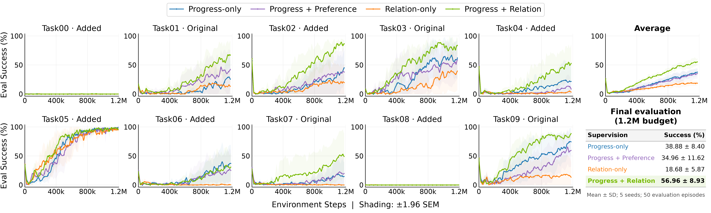
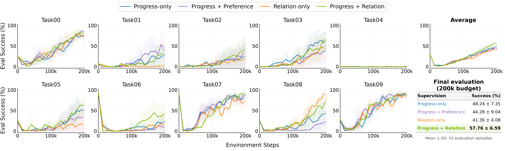
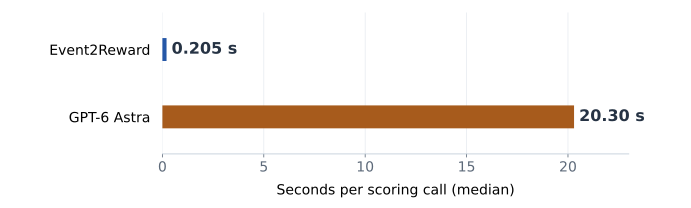

Why does it outperform the baselines?
although the method gets higher success than baselines, it is really unclear why this method is doing better. there are no ablations or visualizations or analyses in the main text.Response
A key reason is that Event2Reward directly corrects the progress predictions used to compute shaping rewards. Shaping rewards depend on changes in progress between adjacent states. Robometer uses a preference head to judge which execution is better and a separate progress head to predict task progress. Even when the preference head correctly ranks a successful trajectory above a failed one, the progress head may still mistake a drop for progress. Although the two heads share a backbone, the preference loss does not directly penalize this local error. These local predictions directly determine the shaping rewards received by the policy. If the model mistakes an actual setback for progress, it may produce positive shaping feedback, encouraging the policy to learn incorrect actions. Event2Reward instead directly constrains post-drop progress to be lower than pre-drop progress and penalizes predictions that violate this relation.
The videos below illustrate this difference. In Figure R9, the bottle drops and is later picked up again. Event2Reward’s progress prediction decreases after the drop and rises as the robot re-grasps and lifts the bottle, while Robometer’s prediction changes relatively little and does not clearly reflect the regression and recovery. Figure R10 provides another drop-and-recovery example with a ketchup bottle. These examples illustrate that the ability to compare entire executions does not guarantee correct progress feedback during an execution.
The supervision ablations in §4.1 and Appendix C.1 further show that learning to compare trajectories does not necessarily yield more effective shaping rewards. Progress + Preference, which uses Robometer-style trajectory-comparison learning, achieves an average accuracy of 95% on unseen success–failure comparisons in LIBERO-10 (Table 10), confirming that it learned the comparison task. However, in the policy-learning experiments on four LIBERO-10 tasks, its normalized evaluation AUC is 19.4%, close to the 19.6% achieved by Progress-only, while Progress + Relation achieves 36.7% (Figure 3 and Table 9). Thus, in these experiments, high trajectory-comparison accuracy did not translate into better policy-learning performance.
| Supervision | Normalized evaluation AUC (%) |
|---|---|
| Progress-only | 19.6 ± 10.1 |
| Progress + Preference | 19.4 ± 14.3 |
| Relation-only | 8.3 ± 7.9 |
| Progress + Relation | 36.7 ± 7.8 |
Normalized evaluation AUC averaged across four LIBERO-10 tasks, reported as mean ± SD over five environment seeds. Progress + Preference is a supervision ablation, not the full Robometer system.
These supervision ablations were already presented in Figure 3 of §4.1 in the main text, with the corresponding numerical results in Appendix C.1, Table 9. We have also extended the supervision ablations to all ten LIBERO-10 tasks and all ten LIBERO-Object tasks, with complete results provided in our response to W3 on task coverage.
Why were only four LIBERO tasks evaluated?
why is there only 4 libero tasks? that seems cherry picked to me.Response
The four tasks mentioned by the reviewer refer to the supervision ablation in §4.1, whereas the main comparison in the original §4.2 covers all 40 tasks across four LIBERO suites. We agree that an ablation on only four tasks is insufficient to rule out the possibility that the conclusion depends on task selection. We therefore extended the supervision ablation to all tasks in LIBERO-10 and conducted corresponding experiments on all tasks in LIBERO-Object. Each condition uses five environment seeds.
On the six tasks not included in the original ablation, Progress + Relation still achieves the highest mean success rate, 45.13%, compared with 27.00% for Progress + Preference, and also exceeds the runner-up, Progress-only, at 34.07%. The average results on these additional tasks also support the advantage of joint supervision, showing that this observation is not limited to the original four tasks. Complete per-task results are shown in Figure R2.

In addition, we added supervision ablations on all tasks in LIBERO-Object. In these experiments, Progress + Relation also achieves the highest mean success rate (Figure R1). Across both LIBERO-10 and LIBERO-Object, Progress + Relation also achieves the highest normalized evaluation AUC, with detailed results in the table below.

| Supervision | LIBERO-10: six additional tasks | LIBERO-10: all ten tasks | LIBERO-Object: all ten tasks |
|---|---|---|---|
| Progress-only | 16.21 ± 3.91 | 17.58 ± 4.37 | 22.22 ± 2.60 |
| Progress + Preference | 15.16 ± 3.42 | 16.85 ± 5.21 | 21.13 ± 1.10 |
| Relation-only | 13.14 ± 4.63 | 11.20 ± 2.77 | 19.77 ± 2.66 |
| Progress + Relation | 22.81 ± 3.42 | 28.36 ± 3.61 | 24.06 ± 3.90 |
Normalized evaluation AUC (%), computed as in §4.1 (Appendix C.1).
What data are needed for target-task adaptation?
little discussion of what data is needed to adapt to the reward model to the task. this itself seems like it requires some thought and explorationResponse
1. What data are used for adaptation?
Target-task adaptation with Event2Reward does not require a fixed ratio of successful, failed, or different event-containing trajectories, nor does it require every task to include all event types. We can use available target-task demonstrations and policy rollouts, applying supervision according to the information each trajectory provides. Normal successful demonstrations provide progress supervision, while events such as stalls, setbacks, and recovery provide supervision on relative progress changes. This allows imperfect and even failed executions to contribute to adaptation. Taking LIBERO as an example, the table below shows the composition of the 200 adaptation trajectories used for each suite.
| Suite | Normal success | Stall | Regression and recovery | No further progress | Unrecovered regression | Total |
|---|---|---|---|---|---|---|
| LIBERO-Spatial | 114 | 28 | 30 | 10 | 18 | 200 |
| LIBERO-Object | 75 | 54 | 10 | 33 | 28 | 200 |
| LIBERO-Goal | 75 | 49 | 15 | 33 | 28 | 200 |
| LIBERO-10 | 75 | 60 | 4 | 33 | 28 | 200 |
Counts refer to unique trajectories, and the categories do not overlap. In our real-robot experiments, we use ten trajectories per task, comprising five successful demonstrations and five suboptimal or failed executions collected during earlier policy runs on that task.
For normal successful demonstrations, we generate progress labels from each frame’s relative temporal position within the demonstration. For executions containing events, we annotate event types and relevant moments. For example, when an object is dropped and then picked up again, we mark the reference time before the drop and the time when the previous level of progress is recovered. These two moments define the interval of lost progress without requiring manual progress scores for every frame. We then use these data to adapt the reward model for 500 updates. The video and event annotations illustrate this drop-and-recovery interval and the two moments to annotate.
2. How much adaptation data is needed for policy learning?
In §4.3, we evaluate the effect of adaptation data size on policy learning across all ten LIBERO-Object tasks. The table below reports the average success rates for Event2Reward at different adaptation data sizes and for the reward baselines.
| Reward method | Policy success (%) ↑ |
|---|---|
| Sparse | 47.40 ± 3.13 |
| Robo-Dopamine | 57.56 ± 6.09 |
| Robometer | 60.56 ± 6.53 |
| Event2Reward (4 traj./task, avg.) | 67.04 ± 5.47 |
| Event2Reward (10 traj./task, avg.) | 72.16 ± 4.89 |
| Event2Reward (20 traj./task, avg.) | 72.16 ± 2.97 |
Policy success on LIBERO-Object within 200k environment steps, reported as mean ± SD over five environment seeds. Adaptation counts refer to reward-model adaptation. Results are from Tables 1 and 16 of the revised paper.
On LIBERO-Object, Event2Reward achieves a mean policy success rate of 67.04% with an average of only 4 adaptation trajectories per task, already exceeding both Robometer (60.56%) and Robo-Dopamine (57.56%). With an average of 10 adaptation trajectories per task, its mean success rate reaches 72.16%, matching its mean with 20 trajectories per task (Figure 4 of the revised paper).

Click the figure to view at full resolution.
What does the annotator mark?
The examples below show event types and their marked moments. Click a moment or drag the timeline to inspect the video.
Choose the event type and mark a and r. The two endpoints define the interval.
Real-robot annotations across three tasks
For each task, compare a stall followed by renewed progress with an execution that makes no further progress. Drag the annotation axis or click a marked state to inspect the video. Playback defaults to 2×.
Mark a when progress stops and r when it resumes.
Mark a where further progress stops. The interval continues to the recording’s end.
Mark a when progress stops and r when it resumes.
Mark a where further progress stops. The interval continues to the recording’s end.
Mark a when progress stops and r when it resumes.
Mark a where further progress stops. The interval continues to the recording’s end.
How does Event2Reward compare with a strong VLM?
the authors should compare against a reward function defined by a capable VLM, such as GPT-6 astra. since VLMs are better now, they are a natural point of comparison.Response
1. Offline reward prediction
We agree that a strong general-purpose VLM such as GPT-6 Astra is a natural reward baseline. We conducted an offline comparison with Astra on 200 LIBERO-Object trajectories excluded from reward-model adaptation, covering 1,731 query points. Both models estimate task progress from the same task information and visual observations. We evaluate whether their predictions reflect the annotated execution events. The table below summarizes the results for stalls and intervals where progress has stopped.
During a stall, the progress score should remain stable. Once progress has stopped, it should not rise further. For each model, we use its score at the annotated start of the event as the reference and compare later scores with that value.
For example, if the reference score is 0.40 and a later prediction is 0.45, the upward deviation is 0.05. This measures a change in the model’s prediction.
| What do we measure? | Event2Reward | Astra |
|---|---|---|
| During stalls, how far do scores move from the reference? ↓ Average deviation, counting both increases and decreases. | 0.0346 | 0.0423 |
| During stalls, what fraction of scores stay within ±0.02 of the reference? ↑ Fraction of predictions within ±0.02 of the reference score. | 37.27% | 40.45% |
| After progress stops, how far do scores rise above the reference? ↓ Average upward deviation. Scores at or below the reference contribute zero. | 0.0181 | 0.0283 |
| After progress stops, how often are scores above the reference? ↓ Fraction above the reference, regardless of the size of the increase. | 46.94% | 32.72% |
Scores range from 0 to 1. Each metric is computed within a trajectory, then averaged across trajectories of that event type. ↑ Higher is better; ↓ lower is better.
During stalls, Event2Reward has a smaller mean absolute deviation from the reference score, whereas Astra performs slightly better in the fraction of predictions within ±0.02 of the reference. After progress stops, Event2Reward has a smaller average upward deviation, but Astra has a lower proportion of scoring points above the reference. Thus, for erroneous increases after progress stops, Event2Reward performs better at limiting their magnitude, whereas Astra produces overly high predictions less often. The videos and progress curves below illustrate how both models respond during these intervals.
The complete offline metrics table reports all eight offline metrics, with each model performing better on different metrics. This experiment compares progress predictions only; we did not train a policy using Astra rewards.
2. Online reward shaping
For online reward shaping, query latency differs substantially. Astra’s measured median query latency is 20.30 seconds, compared with 0.205 seconds for Event2Reward on an H200 GPU. This much higher latency substantially increases the time cost of obtaining rewards and makes Astra difficult to integrate directly into online reward shaping.

We also provide a video of the online plug-insertion training run reported in the paper. With Event2Reward reward shaping, the policy achieves 10 consecutive autonomous successes in approximately 15 minutes, including human-guided warm-up and robot resets (Figure R7).
- Stage
- Criterion reached
- Attempt
- 37 / 37
Time to 10 consecutive successes
All offline metrics
Arrows indicate whether higher or lower values are better.
| Metric | Trajectories | Event2Reward | Astra |
|---|---|---|---|
| Temporal ordering on successful trajectories (proxy) ↑ | 74 | 98.70% | 95.03% |
| During stalls, how far do scores move from the reference? ↓ | 55 | 0.0346 | 0.0423 |
| Stall predictions within ±0.02 of reference ↑ | 55 | 37.27% | 40.45% |
| After progress stops, how often are scores above the reference? ↓ | 34 | 46.94% | 32.72% |
| After progress stops, how far do scores rise above the reference? ↓ | 34 | 0.0181 | 0.0283 |
| Correct downward direction after unrecovered regression ↑ | 27 | 84.72% | 85.65% |
| Recovery interval below both reference scores ↑ | 10 | 83.75% | 81.25% |
| Difference between pre-loss and recovered reference scores ↓ | 10 | 0.0654 | 0.0650 |